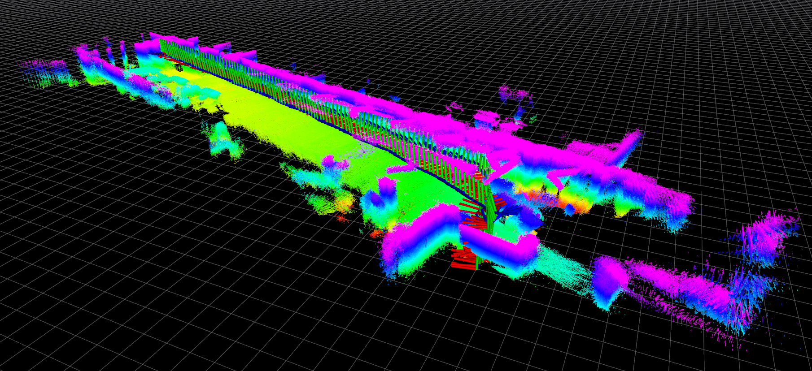

2018-04-26
2018-04-26-16-13-29
| Stairwell exploration with the Astra depth sensor at Pennovation/PERCH: from 4th floor to first floor lobby and back. | ||
| sensor rig: Falcon 250, configuration 1 | location: Building 227 | |
| duration: 136s | ||
| approx path length: 78m | altitude difference: 8.99m | |
| median/maximum velocity: 0.60 / 1.16 m/s | median/maximum angular velocity: 0.33 / 1.34 rad/s | |
| environment: indoors | lighting: artificial | tags: no |
| rosbag with raw data (14Gb) | tar file with calibration and launch files | rosbag with odometry (24Mb) |
2018-04-26-16-39-21
| Exploration of Pennovation lobby with the Astra sensor. | ||
|  | ||
| sensor rig: Falcon 250, configuration 1 | location: Building 227 | |
| duration: 93s | ||
| approx path length: 72m | altitude difference: 2.48m | |
| median/maximum velocity: 1.03 / 1.31 m/s | median/maximum angular velocity: 0.09 / 1.48 rad/s | |
| environment: indoors | lighting: artificial/natural | tags: no |
| rosbag with raw data (9.5Gb) | tar file with calibration and launch files | rosbag with odometry (17Mb) |
2018-04-26-16-41-39
| Loop with the Astra sensor on first floor at Pennovation near lobby. | ||
| sensor rig: Falcon 250, configuration 1 | location: Building 227 | |
| duration: 87s | ||
| approx path length: 64m | altitude difference: 1.31m | |
| median/maximum velocity: 0.88 / 1.39 m/s | median/maximum angular velocity: 0.11 / 1.30 rad/s | |
| environment: indoors | lighting: artificial/natural | tags: no |
| rosbag with raw data (8.9Gb) | tar file with calibration and launch files | rosbag with odometry (16Mb) |
2018-04-26-16-48-15
| Testing the Astra outside of the Pennovation center. | ||
| sensor rig: Falcon 250, configuration 1 | location: Building 227 | |
| duration: 130s | ||
| approx path length: 123m | altitude difference: 1.55m | |
| median/maximum velocity: 1.16 / 1.45 m/s | median/maximum angular velocity: 0.07 / 1.58 rad/s | |
| environment: indoors | lighting: artificial/natural | tags: no |
| rosbag with raw data (14Gb) | tar file with calibration and launch files | rosbag with odometry (23Mb) |